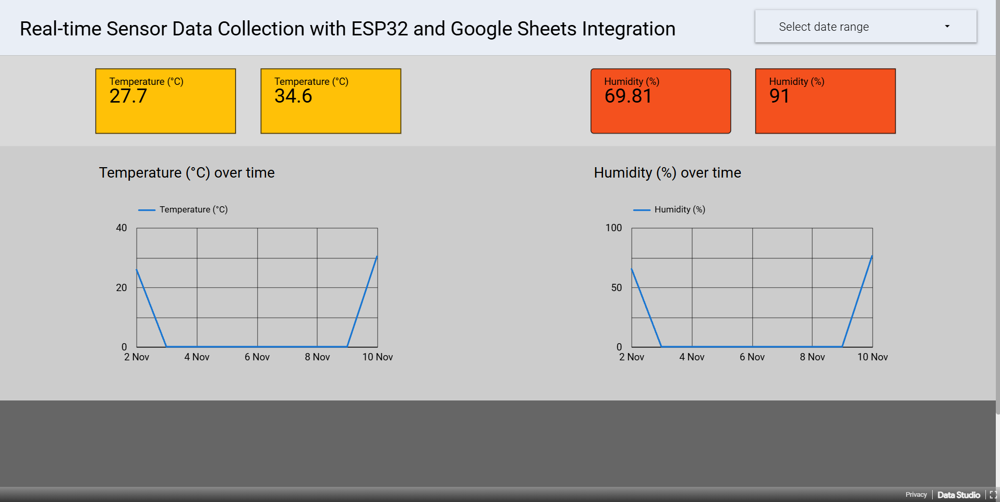

Project 1: Project Real-Time Data Sensor Data Collection
Problem Statement
The main problem addressed by this project is the need to upgrade an existing monitoring system from displaying simulated data to tracking real-time environmental conditions. Previously, the dashboard only showed test data rather than actual measurements from a physical sensor. To solve this, the project connects a physical sensor and an ESP32 microcontroller to automatically collect live temperature and humidity readings and display them directly on the online dashboard.
My Role
In this project, I was responsible for building and connecting the entire system from the physical hardware to the mobile app. I wired the DHT11 sensor to the ESP32 microcontroller and programmed the board in Arduino IDE to read live temperature and humidity values and send them over Wi-Fi. Next, I connected the ESP32 to Google Sheets using Google Apps Script so incoming measurements were automatically logged and formatted. Finally, I linked the spreadsheet to Google Looker Studio to display real-time charts and scorecards, and configured the Android Studio application using WebView so users can easily view the live dashboard on a mobile phone.
Tools Used
- ESP32 Microcontroller
- DHT11 Sensor
- USB Cable
- Wire Jumpers
- Arduino
- Google Sheets
- Google Looker Studio
- Google Apps Script
- Android Studio
- GitHub
Project Outcome
By completing this project, we successfully connected an ESP32 microcontroller and a DHT11 sensor to Google Sheets using Google Apps Script to automatically collect, store, and display live temperature and humidity readings. We upgraded our Looker Studio dashboard and Android mobile application to show actual sensor measurements—such as temperatures between 25.60°C and 26.40°C and humidity levels between 65% and 67%—instead of simulated test data. Through troubleshooting upload errors, sensor reading failures, HTTP connection codes, and spreadsheet formatting issues, we gained practical skills in setting up hardware connections, managing wireless data transmission, and formatting cloud data so it displays accurately on remote dashboards.